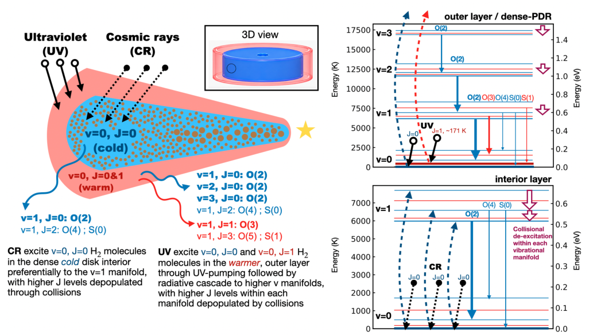
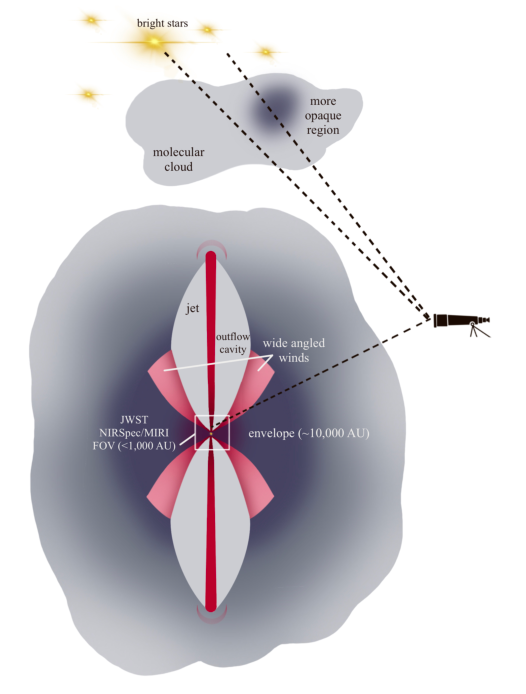
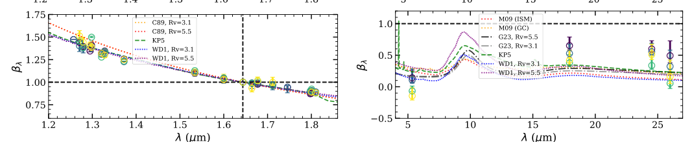
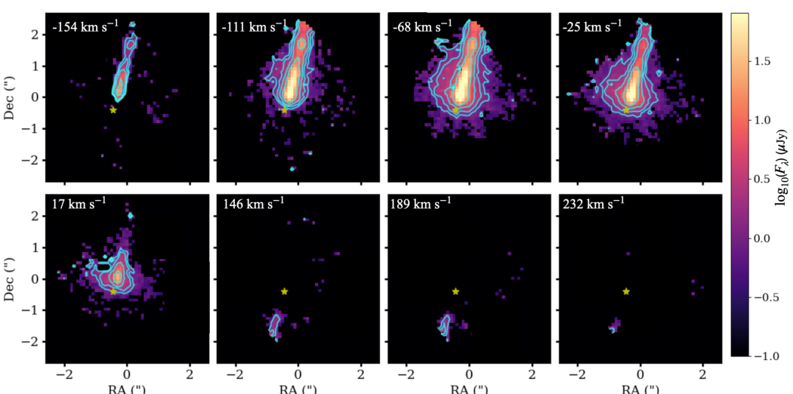

SCIENCE
From young stars to molecular disks.
I combine observations and physical modeling to understand how gas, dust, and chemistry evolve during star and planet formation.
01 / COSMIC RAYS & MOLECULAR HYDROGEN
What powers H₂ emission in cold disks?
Ro-vibrational H₂ emission can reveal excitation processes in molecular gas. In the edge-on disk Oph 163131, I investigate how ultraviolet radiation and cosmic rays contribute to a vibrationally excited but rotationally cold population.
The line pattern and spatial distribution offer a way to explore ionization in disk gas, while testing alternative excitation mechanisms.
Read the paper ↗
02 / DUST & EXTINCTION
Using jets to probe the dust around them.
Iron emission lines from the embedded TMC1A jet provide diagnostics of gas density and infrared extinction. Comparing observed and modeled line ratios lets us investigate the wavelength dependence of attenuation through the protostellar envelope.
This connects the physics of outflows to the properties of the dust that surrounds a forming star.
Read the paper ↗



03 / PROTOSTELLAR JETS & OUTFLOWS
Resolving an asymmetric stellar nursery.
JWST’s NIRSpec integral-field spectroscopy resolves the atomic jet and molecular outflow of TMC1A. Velocity channel maps help separate their structure and motion, including the fainter redshifted side of the bipolar jet.
I use these observations to study how young stars eject material and interact with their surroundings.
Read the paper ↗
CONNECTED QUESTIONS
The chemistry of forming planetary systems
My current interests also include complex organic molecules in star-forming environments and the role of energetic processes in shaping molecular chemistry. Earlier work includes infrared variability and accretion in young stars, alongside computational studies of planet formation.